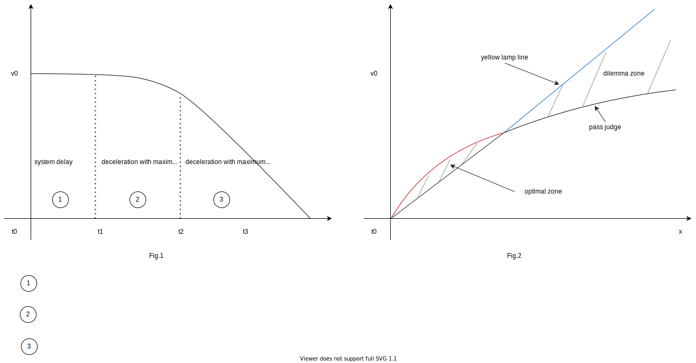

Index
Traffic Light#
Role#
Judgement whether a vehicle can go into an intersection or not by traffic light status, and planning a velocity of the stop if necessary. This module is designed for rule-based velocity decision that is easy for developers to design its behavior. It generates proper velocity for traffic light scene.

Limitations#
This module allows developers to design STOP/GO in traffic light module using specific rules. Due to the property of rule-based planning, the algorithm is greatly depends on object detection and perception accuracy considering traffic light. Also, this module only handles STOP/Go at traffic light scene, so rushing or quick decision according to traffic condition is future work.
Activation Timing#
This module is activated when there is traffic light in ego lane.
Algorithm#
-
Obtains a traffic light mapped to the route and a stop line correspond to the traffic light from a map information.
- If a corresponding traffic light signal have never been found, it treats as a signal to pass.
- If a corresponding traffic light signal is found but timed out, it treats as a signal to stop.
-
Uses the highest reliability one of the traffic light recognition result and if the color of that was not green or corresponding arrow signal, generates a stop point.
- If an elapsed time to receive stop signal is less than
stop_time_hysteresis, it treats as a signal to pass. This feature is to prevent chattering.
- If an elapsed time to receive stop signal is less than
-
When vehicle current velocity is
- higher than
yellow_light_stop_velocitym/s ⇒ pass judge(using next slide formula)
- lower than
yellow_light_stop_velocitym/s ⇒ stop
- higher than
-
When it to be judged that vehicle can’t stop before stop line, autoware chooses one of the following behaviors
- "can pass through" stop line during yellow lamp => pass
- "can’t pass through" stop line during yellow lamp => emergency stop
Dilemma Zone#

-
yellow lamp line
It’s called “yellow lamp line” which shows the distance traveled by the vehicle during yellow lamp.
-
dilemma zone
It’s called “dilemma zone” which satisfies following conditions: - vehicle can’t pass through stop line during yellow lamp.(right side of the yellow lamp line)
-
vehicle can’t stop under deceleration and jerk limit.(left side of the pass judge curve)
⇒emergency stop(relax deceleration and jerk limitation in order to observe the traffic regulation)
-
-
optional zone
It’s called “optional zone” which satisfies following conditions: - vehicle can pass through stop line during yellow lamp.(left side of the yellow lamp line)
-
vehicle can stop under deceleration and jerk limit.(right side of the pass judge curve)
⇒ stop(autoware selects the safety choice)
-
Module Parameters#
| Parameter | Type | Description |
|---|---|---|
stop_margin |
double | [m] margin before stop point |
tl_state_timeout |
double | [s] time out for detected traffic light result. |
stop_time_hysteresis |
double | [s] time threshold to decide stop planning for chattering prevention |
yellow_lamp_period |
double | [s] time for yellow lamp |
yellow_light_stop_velocity |
double | [m/s] velocity threshold for always stopping at a yellow light. |
enable_pass_judge |
bool | [-] whether to use pass judge |
v2i.use_remaining_time |
bool | [-] whether to use V2I remaining time information for traffic light decision |
v2i.last_time_allowed_to_pass |
double | [s] relative time against the time of turn to red - safety margin for passing through |
v2i.velocity_threshold |
double | [m/s] velocity threshold to change decision logic for V2I prediction |
v2i.required_time_to_departure |
double | [s] required time to departure for low speed scenarios to prevent unsafe passing |
Flowchart#
![uml diagram]()
Known Limits#
- tbd.